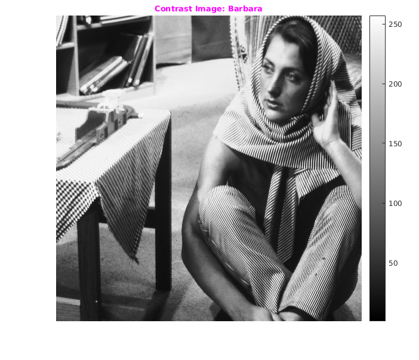

Assignment 1 -- Question 2
CS-663 Group-163059009,16305R011,16305R006
Contents
- Linear Contrast
- Linear Contrast: Temp
- Linear Contrast: Canyon
- Histogram Eq
- Histogram Eq: Barbara
- Histogram Eq: Tem
- Histogram Eq: Canyon
- Adaptive Histogram Equalization
- Logic of AHE used
- Observations made in AHE
- AHE : Barbara
- AHE : TEM
- AHE : Canyon
- CLAHE
- Logic for thersholding in CLAHE
- Observation made in CLAHE
- CLAHE : Barbara
- CLAHE : Tem
- CLAHE : Canyon
fileBarbara='../data/barbara.png'; fileTem='../data/TEM.png'; fileCanyon='../data/canyon.png'; imgBarbara=imread(fileBarbara); imgTem=imread(fileTem); imgCanyon=imread(fileCanyon);
Linear Contrast
Contrast stretching (often called normalization) is a simple image enhancement technique that attempts to improve the contrast in an image by `stretching' the range of intensity values it contains to span a desired range of values.
tic img=imgBarbara; figure('name','Original Image: Barbara'); cmGray=colormap(gray(256)); imshow(img,cmGray),daspect([1,1,1]); title('\fontsize{10}{\color{red}Original Image: Barbara}'); o1 = get(gca, 'Position'); colorbar(),set(gca, 'Position', o1); pause(1); [out,intensities]=myLinearContrastStretching(img,[90,60],[180,230]); figure('name','Contrast Image: Barbara'); imshow(out,cmGray),daspect([1,1,1]); title('\fontsize{10}{\color{magenta}Contrast Image: Barbara}'); o1 = get(gca, 'Position'); colorbar(),set(gca, 'Position', o1); pause(1); figure('name','Contrast Plot: Barbara'),plot([0:255],intensities),xlim([0 255]),ylim([0 255]); title('\fontsize{10}{\color{magenta}Contrast Plot}'); pause(1); toc
Elapsed time is 6.642232 seconds.
Linear Contrast: Temp
tic img=imgTem; figure('name','Original Image: TEM'); imshow(img,cmGray),daspect([1,1,1]); title('\fontsize{10}{\color{red}Original Image: TEM}'); o1 = get(gca, 'Position'); colorbar(),set(gca, 'Position', o1); pause(1); [out,intensities]=myLinearContrastStretching(img,[130,30],[180,220]); figure('name','Contrast Image: TEM'); imshow(out,cmGray),daspect([1,1,1]); title('\fontsize{10}{\color{magenta}Contrast Image: TEM}'); o1 = get(gca, 'Position'); colorbar(),set(gca, 'Position', o1); pause(1); figure('name','Contrast Plot: Tem');plot([0:255],intensities),xlim([0 255]),ylim([0 255]); title('\fontsize{10}{\color{magenta}Contrast Plot}'); pause(1); toc
Elapsed time is 4.833524 seconds.
Linear Contrast: Canyon
tic img=imgCanyon; figure('name','Original Image: Canyon'); imshow(img),daspect([1,1,1]); title('\fontsize{10}{\color{red}Original Image: Canyon}'); pause(1); [out,intensities]=myLinearContrastStretching(img,[40,20],[160,200]); figure('name','Contrast Image: Canyon'); imshow(uint8(out)),daspect([1,1,1]); title('\fontsize{10}{\color{magenta}Contrast Image: Canyon}'); pause(1); figure('name','Contrast Plot: Canyon');plot([0:255],intensities),xlim([0 255]),ylim([0 255]); pause(1); toc
Elapsed time is 3.969903 seconds.
Histogram Eq
Equailize the histrogram of the image.
Histogram Eq: Barbara
tic img=imgBarbara; figure('name','Original Image: Barbara'); imshow(img,cmGray),daspect([1,1,1]); title('\fontsize{10}{\color{red}Original Image: Barbara}'); o1 = get(gca, 'Position'); colorbar(),set(gca, 'Position', o1) pause(1); out=myHE(img); figure('name','Histogram Eq: Barbara'); imshow(out,cmGray),daspect([1,1,1]); title('\fontsize{10}{\color{magenta}Histogram Eq: Barbara}'); o1 = get(gca, 'Position'); colorbar(),set(gca, 'Position', o1); pause(1); figure('name','Histogram Eq: Barbara'),imhist(uint8(out)); pause(1); toc
Elapsed time is 5.793031 seconds.

Histogram Eq: Tem
tic img=imgTem; figure('name','Original Image: Tem'); imshow(img,cmGray),daspect([1,1,1]); title('\fontsize{10}{\color{red}Original Image: Tem}'); o1 = get(gca, 'Position'); colorbar(),set(gca, 'Position', o1); pause(1); out=myHE(img); figure('name','Histogram Eq: Tem'); imshow(out,cmGray),daspect([1,1,1]); title('\fontsize{10}{\color{magenta}Histogram Eq: Tem}'); o1 = get(gca, 'Position'); colorbar(),set(gca, 'Position', o1); pause(1); figure('name','Histogram Eq: Tem'),imhist(uint8(out)); pause(1); toc
Elapsed time is 4.052315 seconds.
Histogram Eq: Canyon
tic img=imgCanyon; figure('name','Original Image: Canyon'); imshow(img,cmGray),daspect([1,1,1]); title('\fontsize{10}{\color{red}Original Image: Canyon}'); pause(1); out=myHE(img); figure('name','Histogram Eq: Canyon'); imshow(uint8(out)),daspect([1,1,1]); title('\fontsize{10}{\color{magenta}Histogram Eq: Canyon}'); pause(1); toc
Elapsed time is 2.710399 seconds.
Adaptive Histogram Equalization
Finds new enhanced intensity by using AHE algo and by NxN window size. At at border the portion of window is trimmed which is going out of image.
Logic of AHE used
For speeding up the process we are removing the old intensity count and adding new intensity count in the histogram of previous NxN block. Movement of Block of NxN is from Left to Right then Right to Left i.e at the right end move block Down by 1 and then start moving from Right to Left.
Observations made in AHE
Small window size : Gives a unclear image.Noise gets enhanced.
Large window size : Gives a image very close to histogram equilization.
After parameter tunning we get a image such that information can be seen very accurately.
AHE : Barbara
tic img=imgBarbara; figure('name','Original Image: Barbara'); imshow(img,cmGray),daspect([1,1,1]); title('\fontsize{10}{\color{red}Original Image: Barbara}'); o1 = get(gca, 'Position'); colorbar(),set(gca, 'Position', o1); pause(1); out=myAHE(img,281); figure('name','AHE: Barbara'); imshow(out,cmGray),daspect([1,1,1]); title('\fontsize{10}{\color{magenta}AHE: Barbara with Window 281x281}'); o1 = get(gca, 'Position'); colorbar(),set(gca, 'Position', o1); %figure('name','AHE: Barbara'),imhist(uint8(out)); pause(1); out=myAHE(img,11); figure('name','AHE: Barbara'); imshow(out,cmGray),daspect([1,1,1]); title('\fontsize{10}{\color{magenta}AHE: Barbara with Window 11x11}'); o1 = get(gca, 'Position'); colorbar(),set(gca, 'Position', o1); %figure('name','AHE: Barbara 2'),imhist(uint8(out)); pause(1); out=myAHE(img,501); figure('name','AHE: Barbara'); imshow(out,cmGray),daspect([1,1,1]); title('\fontsize{10}{\color{magenta}AHE: Barbara with Window 501x501}'); o1 = get(gca, 'Position'); colorbar(),set(gca, 'Position', o1); %figure('name','AHE: Barbara 2'),imhist(uint8(out)); toc
Elapsed time is 19.954804 seconds.
AHE : TEM
tic img=imgTem; figure('name','Original Image: Tem'); imshow(img,cmGray),daspect([1,1,1]); title('\fontsize{10}{\color{red}Original Image: Tem}'); o1 = get(gca, 'Position'); colorbar(),set(gca, 'Position', o1); pause(1); out=myAHE(img,121); figure('name','AHE: Tem'); imshow(out,cmGray),daspect([1,1,1]); title('\fontsize{10}{\color{magenta}AHE: Tem with Window 121x121}'); o1 = get(gca, 'Position'); colorbar(),set(gca, 'Position', o1); %figure('name','AHE: Tem'),imhist(uint8(out)); pause(1); out=myAHE(img,11); figure('name','AHE: Tem'); imshow(out,cmGray),daspect([1,1,1]); title('\fontsize{10}{\color{magenta}AHE: Tem with Window 11x11}'); o1 = get(gca, 'Position'); colorbar(),set(gca, 'Position', o1); %figure('name','AHE: Tem'),imhist(uint8(out)); pause(1); out=myAHE(img,541); figure('name','AHE: Tem'); imshow(out,cmGray),daspect([1,1,1]); title('\fontsize{10}{\color{magenta}AHE: Tem with Window 541x541}'); o1 = get(gca, 'Position'); colorbar(),set(gca, 'Position', o1); %figure('name','AHE: Tem'),imhist(uint8(out)); pause(1); toc
Elapsed time is 32.148507 seconds.
AHE : Canyon
tic img=imgCanyon; figure('name','Original Image: Canyon'); imshow(img,cmGray),daspect([1,1,1]); title('\fontsize{10}{\color{red}Original Image: Canyon}'); pause(1); out=myAHE(img,221); figure('name','AHE: Canyon'); imshow(uint8(out),cmGray),daspect([1,1,1]); title('\fontsize{10}{\color{magenta}AHE: Canyon with Window 221x221}'); pause(1); out=myAHE(img,11); figure('name','AHE: Canyon'); imshow(uint8(out),cmGray),daspect([1,1,1]); title('\fontsize{10}{\color{magenta}AHE: Canyon with Window 11x11}'); pause(1); out=myAHE(img,343); figure('name','AHE: Canyon'); imshow(uint8(out),cmGray),daspect([1,1,1]); title('\fontsize{10}{\color{magenta}AHE: Canyon with Window 343x343}'); pause(1); toc
Elapsed time is 47.038648 seconds.
CLAHE
Limited AHE (CLAHE) differs from ordinary adaptive histogram equalization in its contrast limiting.
Logic for thersholding in CLAHE
Limits the amplification by : Clip the histogram at a predefined value (free parameter) Redistribute the mass uniformly throughout the range Then, compute the CDF
Observation made in CLAHE
For large thresholding value lot of information can be gained.
CLAHE : Barbara
tic img=imgBarbara; figure('name','Original Image: Barbara'); imshow(img,cmGray),daspect([1,1,1]); title('\fontsize{10}{\color{red}Original Image: Barbara}'); pause(1); out=myCLAHE(img,251,0.2); figure('name','CLAHE: Barbara with Window 251x251 and Threshold=0.2'); imshow(out,cmGray),daspect([1,1,1]); title('\fontsize{10}{\color{magenta}CLAHE: Canyon with Window 251x251 and Threshold=0.2}'); o1 = get(gca, 'Position'); colorbar(),set(gca, 'Position', o1); pause(1); out=myCLAHE(img,11,0.1); figure('name','CLAHE: Barbara with Window 11x11 and Threshold=0.1'); imshow(out,cmGray),daspect([1,1,1]); title('\fontsize{10}{\color{magenta}CLAHE: Canyon with Window 11x11 and Threshold=0.1}'); o1 = get(gca, 'Position'); colorbar(),set(gca, 'Position', o1); pause(1); out=myCLAHE(img,511,0.2); figure('name','CLAHE: Barbara with Window 511x511 and Threshold=0.1'); imshow(out,cmGray),daspect([1,1,1]); title('\fontsize{10}{\color{magenta}CLAHE: Canyon with Window 511x511 and Threshold=0.1}'); o1 = get(gca, 'Position'); colorbar(),set(gca, 'Position', o1); pause(1); %figure('name','Histogram Eq: Barbara'),imhist(uint8(out)); toc
Elapsed time is 27.816313 seconds.
CLAHE : Tem
tic img=imgTem; figure('name','Original Image: Tem'); imshow(img,cmGray),daspect([1,1,1]); title('\fontsize{10}{\color{red}Original Image: Tem}'); out=myCLAHE(img,300,0.1); figure('name','CLAHE: Tem with Window 251x251 and Threshold=0.2'); imshow(out,cmGray),daspect([1,1,1]); title('\fontsize{10}{\color{magenta}CLAHE: Tem with Window 300x300 and Threshold=0.1}'); o1 = get(gca, 'Position'); colorbar(),set(gca, 'Position', o1); pause(1); out=myCLAHE(img,11,0.05); figure('name','CLAHE: Tem with Window 11x11 and Threshold=0.1'); imshow(out,cmGray),daspect([1,1,1]); title('\fontsize{10}{\color{magenta}CLAHE: Tem with Window 11x11 and Threshold=0.5}'); o1 = get(gca, 'Position'); colorbar(),set(gca, 'Position', o1); pause(1); out=myCLAHE(img,511,0.05); figure('name','CLAHE: Tem with Window 511x511 and Threshold=0.1'); imshow(out,cmGray),daspect([1,1,1]); title('\fontsize{10}{\color{magenta}CLAHE: Tem with Window 511x511 and Threshold=0.5}'); o1 = get(gca, 'Position'); colorbar(),set(gca, 'Position', o1); pause(1); %figure('name','Histogram Eq: Barbara'),imhist(uint8(out)); toc
Elapsed time is 43.963563 seconds.
CLAHE : Canyon
tic img=imgCanyon; figure('name','Original Image: Canyon'); imshow(img,cmGray),daspect([1,1,1]); title('\fontsize{10}{\color{red}Original Image: Canyon}'); pause(1); out=myCLAHE(img,221,[0.001,0.02,0.002]); figure('name','CLAHE Eq: Canyon'); imshow(uint8(out),cmGray),daspect([1,1,1]); title('\fontsize{10}{\color{magenta}CLAHE: Canyon with Window 221x221 and Threshold=[0.001,0.02,0.002]}'); pause(1); out=myCLAHE(img,11,[0.00001,0.00001,0.00001]); figure('name','CLAHE Eq: Canyon'); imshow(uint8(out),cmGray),daspect([1,1,1]); title('\fontsize{10}{\color{magenta}CLAHE: Tem with Window 11x11 and Threshold=0.0005,0.01,0.001]}'); pause(1); out=myCLAHE(img,331,[0.0005,0.01,0.001]); figure('name','CLAHE Eq: Canyon'); imshow(uint8(out),cmGray),daspect([1,1,1]); title('\fontsize{10}{\color{magenta}CLAHE: Tem with Window 331x331 and Threshold=0.0005,0.01,0.001]}'); pause(1); toc
Elapsed time is 86.282368 seconds.